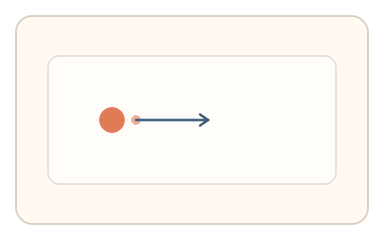
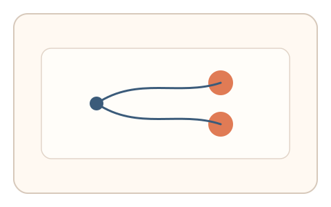

#93
Morphological Analysis - Combination Batches
已扩展
两点跃迁比
连续完成近点与远点点击，比较两段耗时与距离关系，以时间‑距离函数验证真实性。
概念原文
连续完成近点与远点点击，系统比较两段耗时与难度指数的相对关系并与群体基线比对。任务结构为短序列，信号形态为反应时与节律序列。
用“时间‑距离函数”验证运动规律性。
研究背景
人类在指向任务中遵循稳定的时间‑距离关系（如 Fitts' law），近点与远点的耗时比具有可预测的区间。通过短序列测量可有效区分脚本。
核心机制
- 呈现近点与远点目标，要求连续点击。
- 记录两段移动耗时与路径节奏。
- 计算耗时比与距离指数的相对关系。
- 与群体基线分布进行比对。
用户流程
- 步骤 1：用户点击近点目标。
- 步骤 2：立即点击远点目标完成序列。
- 步骤 3：系统计算耗时比并判定。
判定信号
近远点耗时比
人类移动时间与距离呈稳定函数关系。
路径节奏与停顿
真实用户会表现出自然的微停顿与纠偏。
判定逻辑
耗时比需落在人类分布区间，且路径节奏合理；过度一致或不符合距离关系判异常。
对抗面
- 脚本按固定耗时模拟点击
- 重放真实用户的点击序列
防御与缓解
- 随机化目标距离与大小
- 引入轻微动态扰动降低模板化
- 叠加轨迹微抖动信号进行多信号判定
可达性与风险
提供更大目标与慢速模式，支持键盘替代选择。
- 设备输入延迟影响耗时比
- 触控与鼠标差异导致分布变化
可视化状态

状态 1：近点目标
先点击近点目标。

状态 2：远点跃迁
随后快速移动点击远点。

状态 3：耗时判定
比较耗时比与距离关系。
参考资料
Fitts's law
说明移动时间与距离/目标大小的关系。
Human–computer interaction
说明指向任务与交互节奏特征。